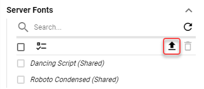
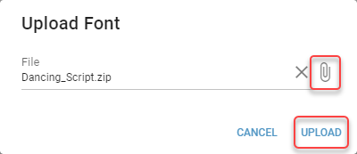

Fonts - Server¶
Fonts that are not installed and available on target devices can be uploaded in the Server fonts. These fonts are uploaded into the Static Content folder located in static-content\files\{Id of a Business Unit}\fonts subfolder of DW application deploy folder.
Fonts are used for text in Banners, Clocks, Segment titles, KPI and Grid values and so on.
- Name
Read-only
The name of the font.
- Upload Folder
Read-only
Folder, to which the font was uploaded. The font is uploaded to a subfolder with the name based of its font family.
- CSS Declaration
Read-only
CSS Declaration of the font.
Uploading a Font¶
Supported formats are: woff2, ttf and zip.
Font can be uploaded by clicking the upload button.
Figure 1: Upload button
Locate the font file and click “UPLOAD”.
Figure 2: Upload dialog
Font is added to the list of Server Fonts.